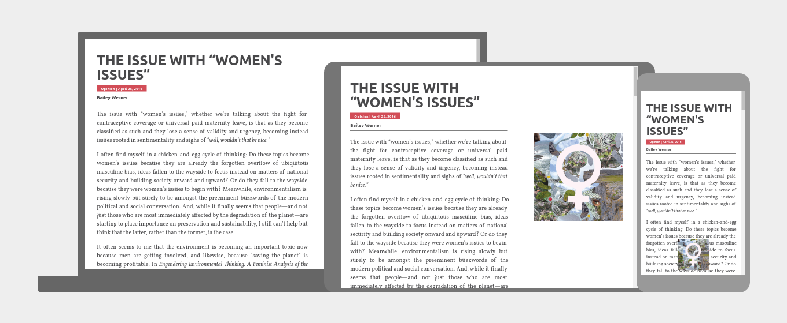
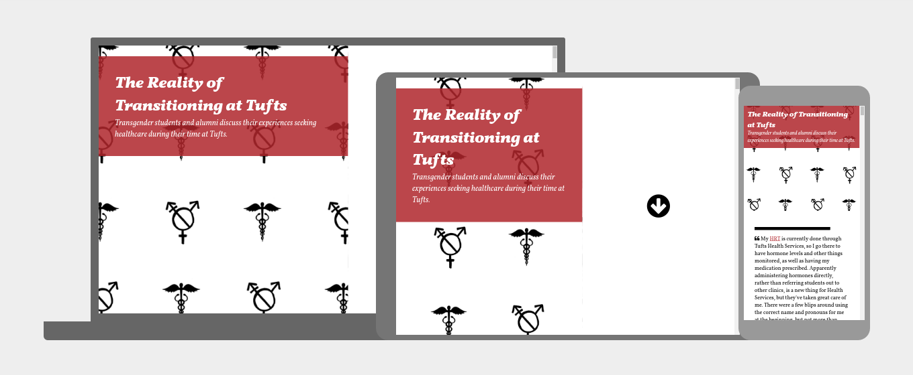
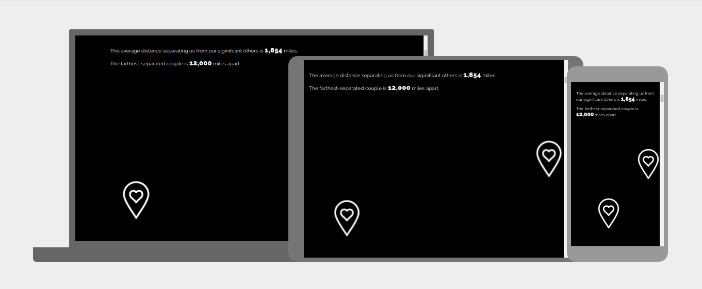
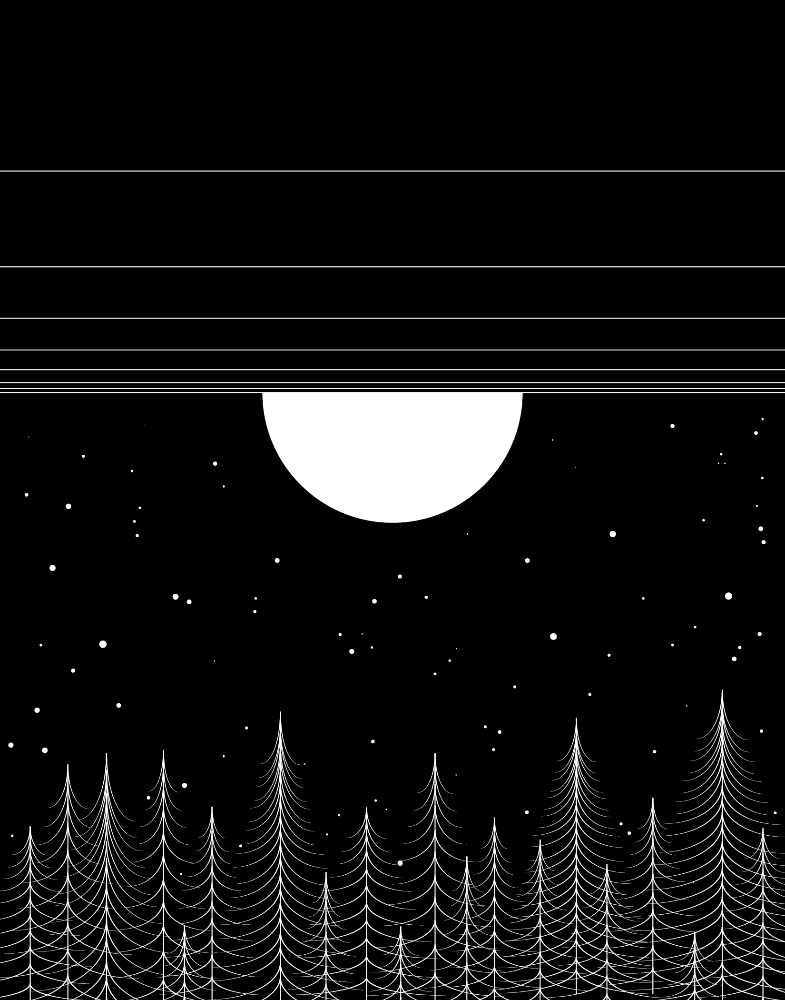

Hi, I'm a CS major at Tufts University minoring in Human Factors. I'm also a multimedia contributor for the Tufts Observer, so I get to take articles and make them interactive and fun to read online. My favorite things are stand-up comedy, public transportation, and weird-looking dogs.
↓
Projects
Book Recommendations
Live · Github · Built with Masonry, connects to Google Forms and Goodreads

Quote Cube
Live · Github · Built with waypoints.js, modeled from David DeSandro's cube
Healthcare Article
Live · Github · Built with skrollr.js and balloon.css
Long Distance Relationships Web-fographic
Live · Github · Built with skrollr.js
Artwork and Layout
 

This website was made with HTML5 Boilerplate and inspired by Ruben Stom's personal portfolio. I also used Google Design's resizer web app for the screenshots of my projects.